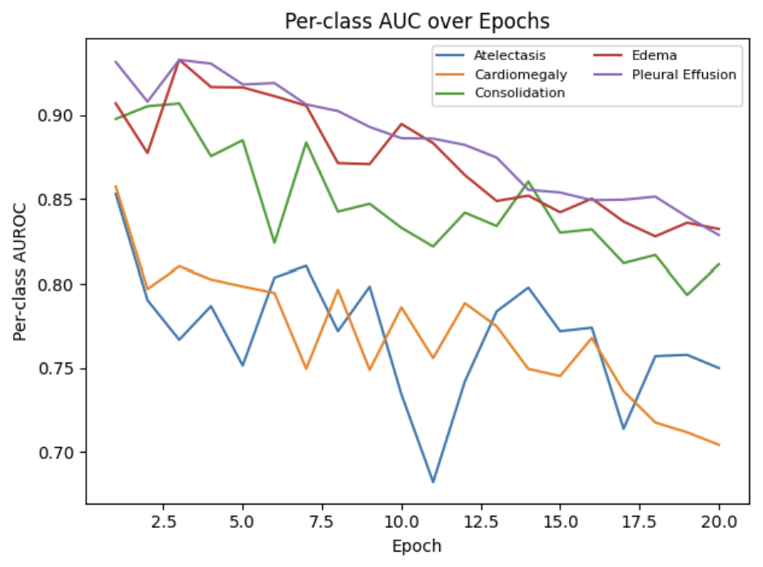

The evaluation problem
Chest radiographs can contain several pathologies, uncertain labels, and images from the same patient. A high score can be reassuring while measuring the wrong thing. This framework examined both multi-label pathology classification and a separate pathology-localization task.
What was built
The InternImage-T classifier trained on 174,288 CheXpert images across five competition pathologies, with an explicit uncertainty-label policy. The independent VinBigData branch used a DINOv2 feature extractor and a convolutional heatmap head, with class-aware training, evaluation plots, image-level AUROC, and detection-level FROC.
What changed when I re-evaluated
A small official validation split briefly suggested roughly 0.89 AUROC before performance fell across training epochs. A patient-level 80/20 split yielded a more stable estimate near 0.80, illustrating how the original headline depended on evaluation setup. The localization branch achieved around 0.48 macro AUROC; sensitivity at one false positive per image was zero in the reported evaluation.

The lesson
An end-to-end, reproducible experiment can be valuable even when its model is not clinically useful. Better detection would require stronger supervision, calibration, resolution studies, and independent validation, not just an appealing demo.
Interpretation & limits
Academic medical-image research only. The classification and localization results are distinct; neither is a validated clinical diagnosis system.